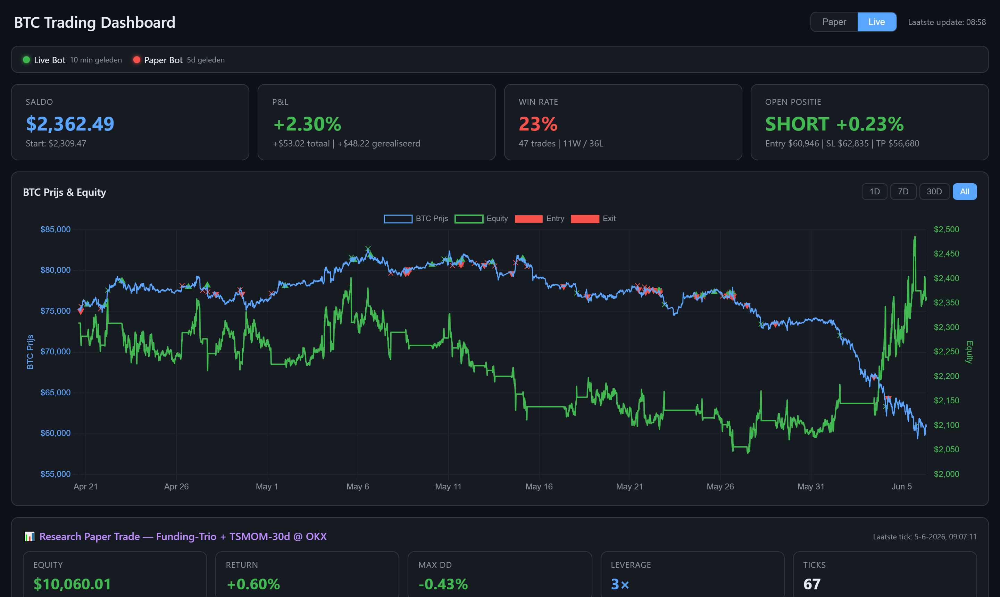
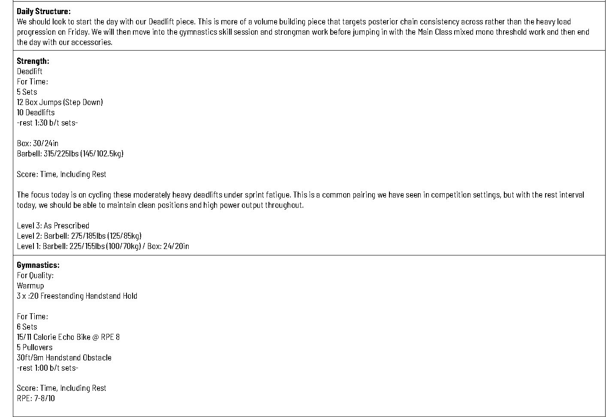
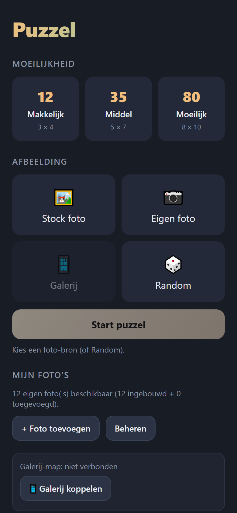
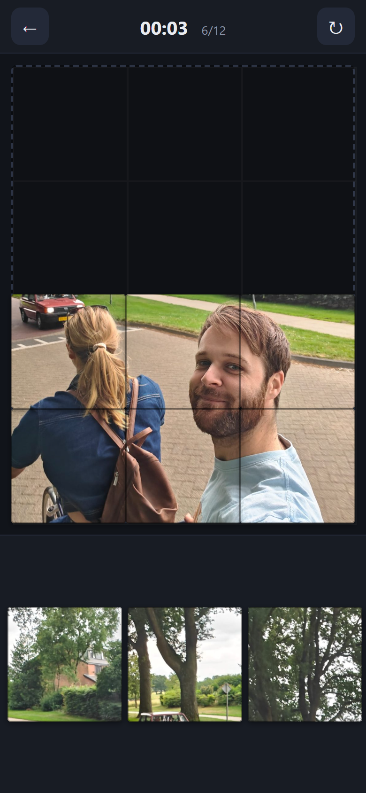

Portfolio · AI-projecten
Ik ben Tim van Dalfsen. De afgelopen periode heb ik mezelf leren ontwikkelen met AI door écht dingen te bouwen: van een volautomatische handelsbot tot een planner die mijn mailbox uitleest en een eigen app die live staat. Deze projecten laten zien hoe ik een probleem omzet in een werkende oplossing, en wat ik onderweg heb geleerd.
De AI revolutie is in volle gang, doe jij mee of blijf je achter?
Mijn aanpak in het kort.
Ik begin bij een concreet probleem uit mijn eigen werk, hobby's of omgeving. Ik schrijf een plan met de stappen die ik moet doorlopen om tot een resultaat te komen en maak hier eventuele sub-projecten voor. Daarna bouw ik snel een prototype om de globale werking en haalbaarheid te testen.
Elk project leerde me een nieuwe vaardigheid: API's, data-automatisering en het opleveren van een echte applicatie. Leren en vermaak zijn ook meestal de drijfveer achter deze projecten.
Ik kijk eerlijk naar wat wél en niet werkt, en gebruik die inzichten om de volgende versie beter te maken.
Een bot die 24/7 zelfstandig Bitcoin verhandelt, met een eigen live dashboard.

De bot draait volledig zelfstandig: hij haalt elke 15 minuten verse marktdata op, berekent een handelssignaal, opent en sluit posities, en bewaakt het risico. Een eigen dashboard toont real-time saldo, P&L, win rate en de equity-curve.
De bot praat via een API met een handelsplatform: marktdata van Binance, order-uitvoering op OKX. Naast gewone REST-aanroepen luistert hij via een websocket live mee met liquidaties en de order-book-balans. De strategie-parameters worden periodiek opnieuw geoptimaliseerd (walk-forward) zodat de bot meebeweegt met de markt.
Bij dit project leerde ik hoe je API's gebruikt om met handelsplatformen te communiceren. Daarnaast heb ik geleerd hoe belangrijk het is om de juiste en voldoende context mee te geven in de verbeter-loop.
Momenteel zijn de resultaten nog niet positief. Er zijn veel mogelijke redenen waar dit door kan komen, maar het is vooral van belang dat ik data verzamel zodat er met meer context verbeteringen doorgevoerd kunnen worden.
Leest wekelijks de trainingen uit mijn mail en zet ze automatisch in de backoffice van mijn sportschool.

Elke week stuurt de programmamaker een PDF met zeven dagen aan trainingen. Deze Claude-routine haalt die PDF automatisch uit mijn mailbox, maakt een extractie van de workouts, giet dit in mijn stijl en uploadt alles via de browser naar een backoffice van een app die coaches en leden gebruiken. Het draait als geplande taak en waarschuwt me als er iets niet klopt.
Dit project bespaart mij 20 minuten per week.
Dit project draaide om omgaan met niet-generieke input. Elke PDF is anders. Ik leerde hoe je rommelige, onvoorspelbare tekst betrouwbaar normaliseert naar gestructureerde data — met herkenning, filtering en fallback-logica, plus alerts wanneer het script ergens onzeker over is.
Na een aantal iteraties komen er nog enkele fouten voorbij die verbeterd moeten worden.
Een installeerbare legpuzzel-app. Van reclame-frustratie tot gepersonaliseerde puzzels maken.


Een digitale legpuzzel met drie moeilijkheidsgraden (12, 35 of 80 stukjes). Je puzzelt met stockfoto's of eigen foto's. Die eigen foto's kun je selecteren of je kunt je galerij koppelen. Compleet met geluidjes, ranglijsten en timers.
De app is gebouwd in pure HTML, CSS en JavaScript — zonder framework. De app staat live via GitHub Pages.
Met dit project leerde ik werken met GitHub (een repository opzetten, met branches werken en automatisch publiceren via GitHub Pages) én een complete applicatie bouwen — van een leeg idee tot een werkende, online app die anderen kunnen gebruiken en installeren. Ik heb mij wederom verbaasd hoe snel je met AI goed werkende applicaties kunt bouwen.
Er zijn allerlei toevoegingen te bedenken, maar momenteel zijn mijn vriendin en ik tevreden met het resultaat.
Heb je een vraag of wil je kennismaken? Ik hoor graag van je.